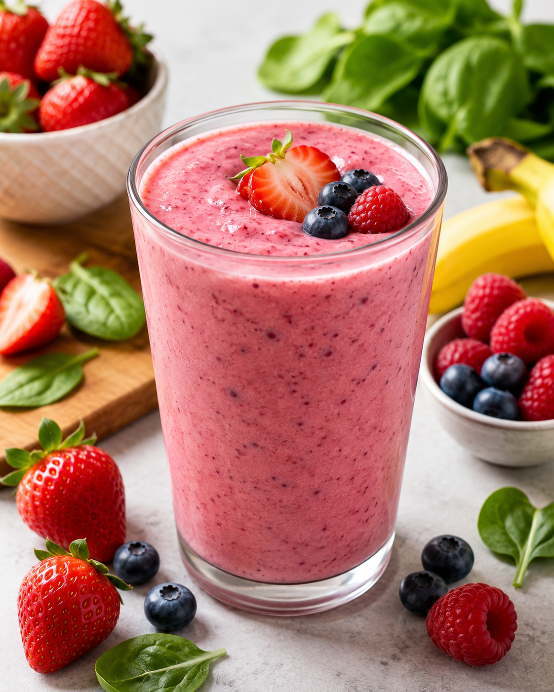

Refreshing Strawberry Smoothie

Ingredients
- 2 cups frozen strawberries
- 1 ripe banana (fresh or frozen)
- 1/2 cup plain or vanilla Greek yogurt
- 1 cup milk (almond, oat, or dairy milk)
- 1 tbsp honey or maple syrup (optional, for sweetness)
- 1/2 cup ice cubes (optional, if using fresh fruit)
Instructions
- Add the liquid (milk) and yogurt to your blender first—this helps the blades blend the frozen fruit easily.
- Add the banana, frozen strawberries, and honey or maple syrup to the blender.
- Secure the lid and blend on high speed for 60-90 seconds until completely smooth and creamy. If the smoothie is too thick, add an extra splash of milk and blend again.
- Pour into a tall glass, garnish with a fresh strawberry slice if desired, and enjoy cold!